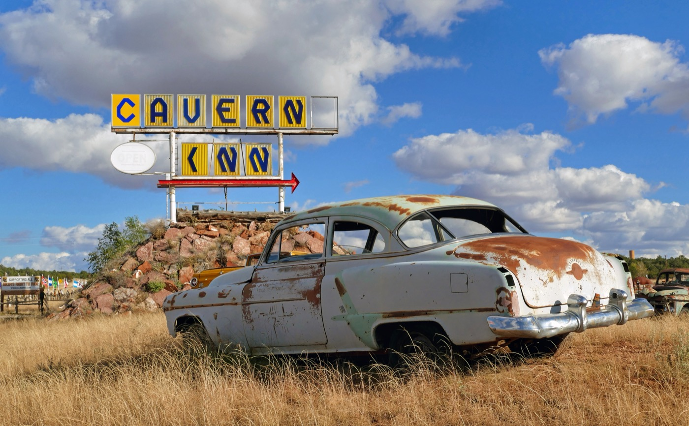

当日深度分时段行程与图文百科
威廉姆斯车览 ➔ 【可选】塞利格曼 (Seligman) 66号公路情怀打卡

🚂 威廉姆斯车览 (Williams)：在凯悦享用早餐后退房（09:00 出发）。沿 I-40 西行，顺路穿过高山松林小镇威廉姆斯，车窗内近距离饱览百年大峡谷蒸汽火车站与古董蒸汽机车，无需下车，轻松掠过。
✨【可选项目 1：塞利格曼/Seligman (66号公路传奇名镇)】(10:15 - 10:50)：
• 《赛车总动员》(Cars) 原型地：这里是动画电影中“水柜温泉镇”的真实灵感源头！
• 漫步体验：在明媚阳光下漫步平坦主街，道路两侧停放着画有卡通大眼睛的 1930~1950 年代古董老爷车、老式加油机与趣味路标（如著名的雪帽汽车餐厅 Delgadillo's Snow Cap），拍照极其出片。平整硬化地面，停留 25~35 分钟，体能消耗极低（免费，无需门票；若感疲劳可在车内慢速观赏后直行）。
文化百科：66号公路“母亲之路”的复兴历史 (点击展开)
🛣️ 母亲之路 (Mother Road)：66 号公路建于 1926 年，东起芝加哥，西至洛杉矶圣莫尼卡，全长近 4000 公里，承载着无数美国开拓者的梦想。小镇塞利格曼的理发师安赫尔·德尔加迪洛 (Angel Delgadillo) 发起保护运动，最终使这里成为全美保存最完好的历史 66 号公路重镇。
胡佛大坝旁侧桥观景台 ➔ 【可选】博尔德城野生大角羊
🌉 胡佛大坝旁侧桥 (Hoover Dam Bypass Bridge Walkway)：在胡佛大坝前驶下，停靠于大坝桥专用免费停车场。沿着平缓的无障碍坡道登上人行观景桥，在高空直接俯瞰壮丽的胡佛大坝工程与科罗拉多河（免费，无需门票）。
🐑【可选项目 2：博尔德城海明威公园 (Hemenway Park)】(14:35 - 15:15)：当年为建大坝而建的历史绿洲小镇，绿树成荫。小镇内的海明威公园常年有成群的野生沙漠大角羊 (Desert Bighorn Sheep) 在平整绿草坪上悠闲吃草。车停公园旁即可在草坪边安全近距离观察（免费，无需门票；若感疲劳可直接直行去酒店）。
工程与生态百科：胡佛大坝奇迹与沙漠大角羊 (点击展开)
🌊 工程壮举：建于 1931~1936 年大萧条时期的胡佛大坝高 221 米，混凝土浇筑量达 325 万立方米。它拦蓄科罗拉多河形成了全美最大人工湖——米德湖 (Lake Mead)，至今为内华达与加州供应着清洁水电与水源。
🐑 沙漠大角羊：内华达州的官方州兽，善于在陡峭岩壁上跳跃。博尔德城的海明威公园种植有新鲜绿草并有喷淋水源，大角羊常在午后来此饮水纳凉，性格温和。
入住拉斯维加斯凯悦 ➔ 百乐宫喷泉 ➔ 太阳马戏团《O秀》
🏨 入住酒店 (16:00)：驱车 40 分钟在天黑前顺利抵达 拉斯维加斯凯悦嘉轩酒店 (Hyatt Place Las Vegas)（确认号: 40023B22959570）。酒店避开赌场嘈杂，包含全家热早餐并提供免费停车，连住 4 晚不挪窝！
🌊 百乐宫喷泉水秀 (18:30)：在酒店打车（约 $8-$10，5-7分钟）直达百乐宫酒店门前，观赏声光水影交织的喷泉秀，并在附近轻松就餐。
🎭 太阳马戏团《O秀》(19:30)：在百乐宫专用水上剧院入座观赏 90 分钟水上大秀。坐席舒适，视觉震撼，无语言门槛，全平路低体能消耗。散场后打车返回酒店休息。